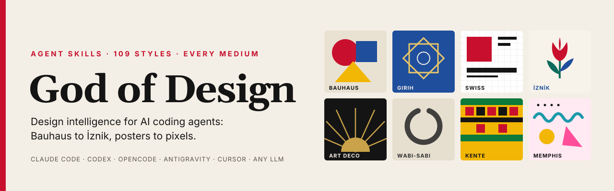

109 stillik atlas
Her stil: köken, görsel DNA, hex palet, Google Fonts, yerleşim kuralları, motifler, yap/yapma, CSS ipuçları ve görsel üretim istemi.
Herhangi bir kültürden, herhangi bir stilde, her mecra için: UI/UX, sosyal medya, baskı, marka, sunum, hareket. Her beceri bir “anti-slop” kapısı ve puanlı incelemeyle biter.

god-anti-slop becerisi ve god-review’da 10 boyutlu puanlı rubrik.Brief → yön → sistem → üretim → eleştiri. Ajanınız ortalama almak yerine bir görüşe bağlanır.
Her stil: köken, görsel DNA, hex palet, Google Fonts, yerleşim kuralları, motifler, yap/yapma, CSS ipuçları ve görsel üretim istemi.
Armoni şemaları, 60-30-10, OKLCH ölçekleri, karanlık mod, renk körlüğü güvenliği ve WCAG kontrast denetleyici betik.
Modüler ölçekler, akışkan clamp(), 60 denetlenmiş font eşleşmesi; Arapça, CJK, Devanagari ve Türkçe ğ ş ı İ dizgisi.
Izgaralar, hiyerarşi, Gestalt; açılış sayfaları, panolar, formlar, mikro metin, iOS HIG ve Material 3.
W3C DTCG JSON, CSS değişkenleri, Tailwind v4 @theme ve DESIGN.md şablonu.
Kontrast, odak, klavye, anlambilim, hareket, dokunma hedefleri ve formlar.
Instagram’dan Threads’e tam ölçüler ve güvenli alanlar; afiş, broşür, kitap kapağı, kartvizit, ambalaj.
Midjourney, GPT Image, Gemini/Imagen, FLUX, Stable Diffusion ve Ideogram için stil başına istem kütüphanesi.
Manifest her dosyayı kaydeder; kaldırma yalnızca onları siler, kendi beceri ve talimatlarınız bayt bayt aynı kalır (test edildi).
Gerçek CLI’larla test edildi (2026-10-03): Claude Code, Codex CLI, OpenCode ve Gemini CLI 19 beceriyi çakışmasız yükler. Antigravity, Cursor, Copilot, Windsurf ve Cline yolları resmî belgelere göredir.
curl | bash, PowerShell ya da npx. Varsayılan: üç klasör, dokuz araç.
Beceriler açıklamalarından otomatik etkinleşir; Claude Code ve OpenCode’da /god-design komutları.
“İstanbul’daki bir seramik atölyesi için Osmanlı İznik stilinde açılış sayfası tasarla.”
Anti-slop kontrolü ve 10 boyutlu puanlı inceleme teslimden önce yapılır.
Tüm kurucular aynı seçenekleri alır: --tool, --global / --project, --dry-run.
curl -fsSL https://raw.githubusercontent.com/cumabozkurt/god-of-design/main/install.sh | bash
# Yalnızca Cursor ve Windsurf, bu projeye curl -fsSL https://raw.githubusercontent.com/cumabozkurt/god-of-design/main/install.sh \ | bash -s -- --tool cursor,windsurf --project # Hiçbir şey yazmadan önizle curl -fsSL https://raw.githubusercontent.com/cumabozkurt/god-of-design/main/install.sh | bash -s -- --dry-run
irm https://raw.githubusercontent.com/cumabozkurt/god-of-design/main/install.ps1 | iex
# Seçeneklerle
$s = irm https://raw.githubusercontent.com/cumabozkurt/god-of-design/main/install.ps1
& ([scriptblock]::Create($s)) install -Tool claude,codex -ProjectNode ≥ 18 olan her yerde.
npx github:cumabozkurt/god-of-design install
# Stilleri listele, durumu gör
npx github:cumabozkurt/god-of-design list styles
npx github:cumabozkurt/god-of-design statusnpx çıktı vermeden kapanırsa: npm exec --yes github:cumabozkurt/god-of-design -- install
ChatGPT, Gemini web, Claude.ai ya da yerel modeller: tek bir Markdown dosyasını yükleyin veya sistem istemi olarak yapıştırın.
# macOS / Linux curl -fsSL https://raw.githubusercontent.com/cumabozkurt/god-of-design/main/install.sh | bash -s -- uninstall # her yerde npm exec --yes github:cumabozkurt/god-of-design -- uninstall
Kaldırıcı manifesti okur ve yalnızca listelenen yolları siler; AGENTS.md / GEMINI.md içinde yalnızca kendi işaretleri arasındaki metni kaldırır.
Belirli bir sürümü sabitlemek için: GOD_OF_DESIGN_REF=v1.1.2. Tüm sürümler: GitHub Releases.
Ajanınız aynı üç kartlı şablon yerine yönü olan, erişilebilir ve üretime hazır arayüzler üretsin.
Marka sistemleri, sosyal medya kampanyaları, baskı işleri ve sunumlar için kesin kurallar.
İznik’ten Kente’ye 45 dünya geleneği, saygılı kullanım protokolüyle.
--project ile mevcut depoya kurun ve commit edin.Tek satırla kurun; ajanınız Bauhaus’tan İznik’e, posterden piksele bir tasarım direktörü gibi düşünsün.